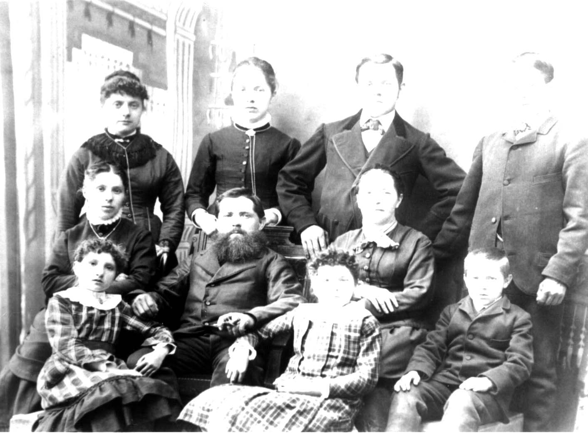

Here's a photograph of Johannes and Elizabeth nee ROTH BIERI and their six children, probably taken in Switzerland. The individuals in the photograph have been identified as follows: Back and standing: Elizabeth BIERI, Susanna BIERI, John BIERI, Christian BIERI; Middle: Anna BIERI, Johannes BIERI, Elizabeth nee ROTH BIERI, Karl BIERI; Front: Fanny BIERI and Rosa BIERI.